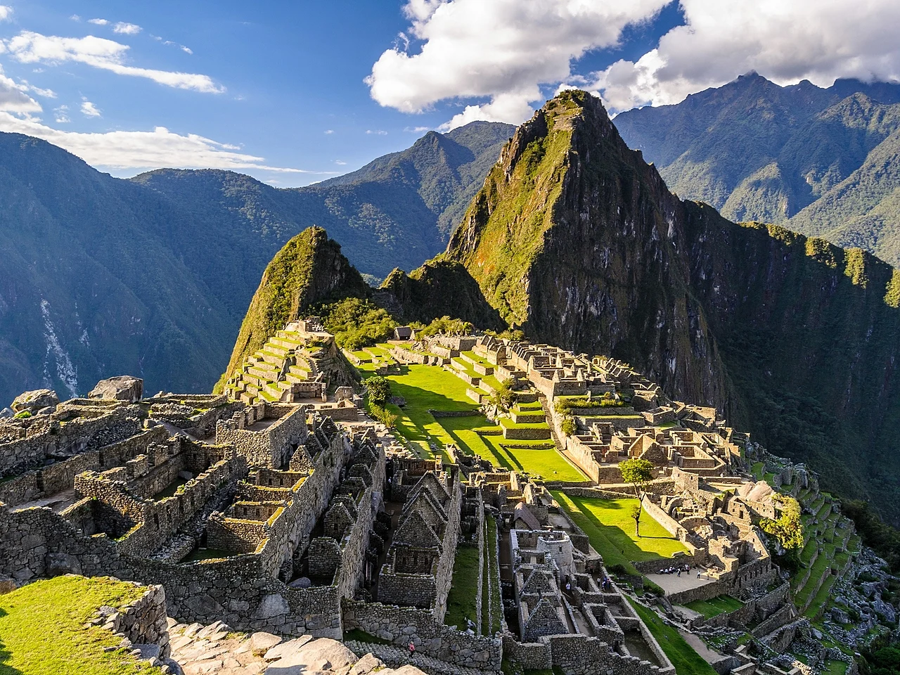
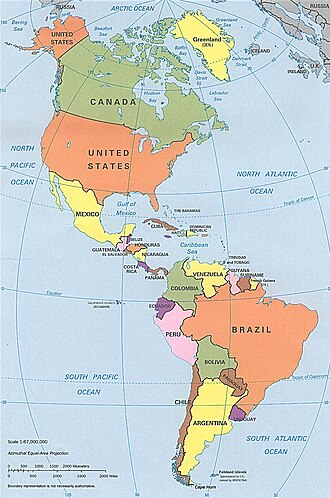
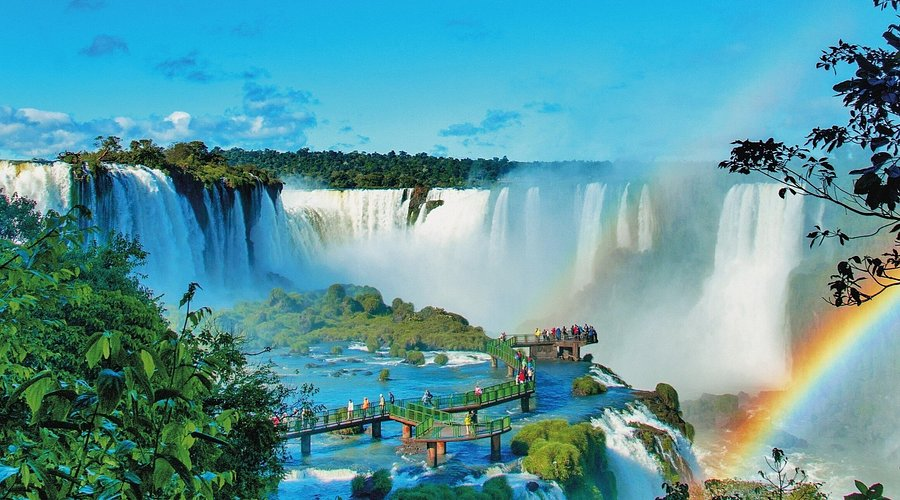
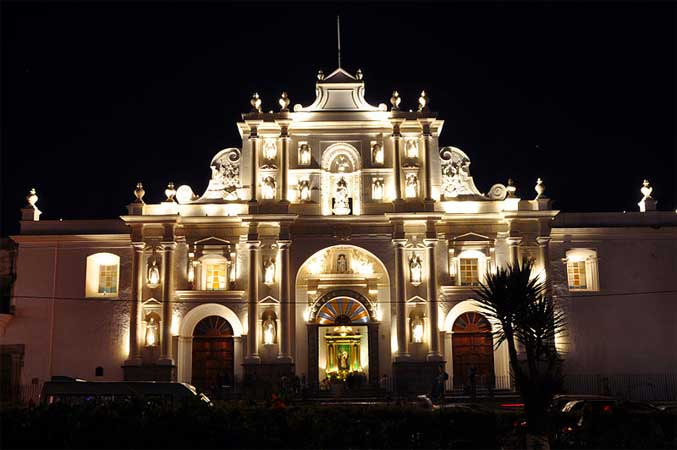
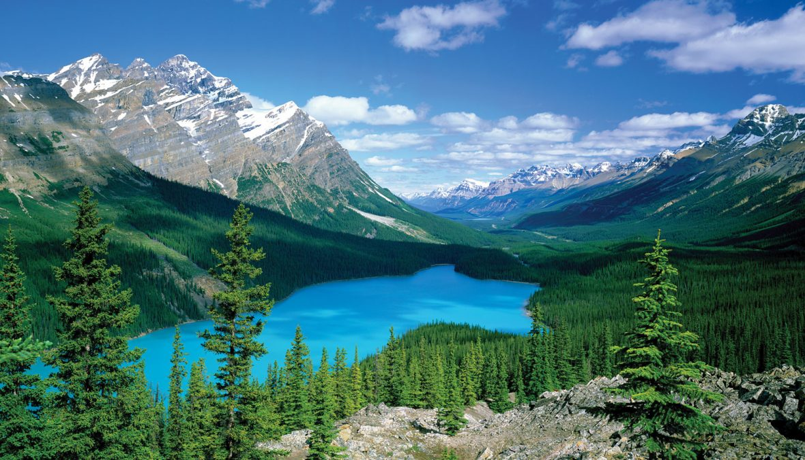

Machu Picchu, Peru

Uma das maravilhas do mundo antigo, localizada nas montanhas do Peru. Explore as ruínas inca e desfrute de vistas deslumbrantes.
Uma jornada pelas terras do Novo Continente

As Américas são conhecidas por sua diversidade cultural, paisagens impressionantes e rica história. De selvas tropicais a cidades modernas, cada região oferece uma experiência única.

Uma das maravilhas do mundo antigo, localizada nas montanhas do Peru. Explore as ruínas inca e desfrute de vistas deslumbrantes.

Uma das maiores quedas d'água do mundo, localizada na fronteira entre Brasil, Argentina e Paraguai.

Uma cidade colonial encantadora, conhecida por suas ruas em pedra e arquitetura colonial espanhola.

Uma das regiões mais populares da República Dominicana, conhecida por suas praias de areia branca e águas cristalinas.

Um dos fenômenos geológicos mais impressionantes do mundo, localizado no estado do Arizona, nos Estados Unidos.

Uma das áreas protegidas mais antigas do mundo, conhecida por suas paisagens montanhosas e lagos cristalinos.